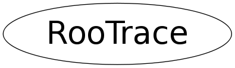

Function Members (Methods)
public:
| RooTrace() | |
| RooTrace(const RooTrace&) | |
| virtual | ~RooTrace() |
| static void | active(Bool_t flag) |
| static void | callgrind_dump() |
| static void | callgrind_zero() |
| static TClass* | Class() |
| static void | create(const TObject* obj) |
| static void | destroy(const TObject* obj) |
| static void | dump() |
| static void | dump(ostream& os, Bool_t sinceMarked = kFALSE) |
| virtual TClass* | IsA() const |
| static void | mark() |
| RooTrace& | operator=(const RooTrace&) |
| virtual void | ShowMembers(TMemberInspector& insp) |
| virtual void | Streamer(TBuffer& b) |
| void | StreamerNVirtual(TBuffer& b) |
| static void | verbose(Bool_t flag) |
Data Members
protected:
| static Bool_t | _active | |
| static RooLinkedList | _list | |
| static RooLinkedList | _markList | |
| static Bool_t | _verbose |
Class Charts
{kind=link}
{kind=link}
{kind=link}
{kind=link}

Function documentation
void verbose(Bool_t flag)
If flag is true, a message will be printed at each object creation or deletion
void callgrind_zero()
Utility function to trigger zeroing of callgrind counters. Note that this function does _not_ do anything, other than optionally printing this message To trigger callgrind zero counter action, run callgrind with argument '--zero-before=RooTrace::callgrind_zero()' (include single quotes in cmdline)
void callgrind_dump()
Utility function to trigger dumping of callgrind counters. Note that this function does _not_ do anything, other than optionally printing this message To trigger callgrind dumping action, run callgrind with argument '--dump-before=RooTrace::callgrind_dump()' (include single quotes in cmdline)